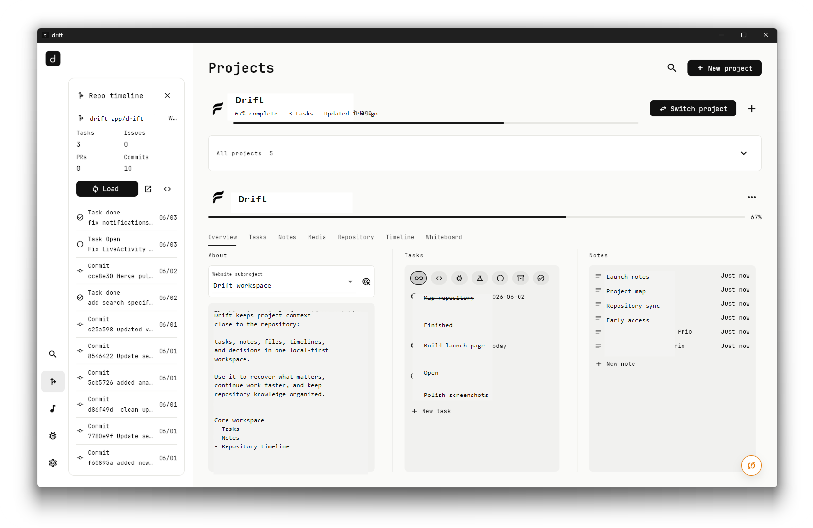
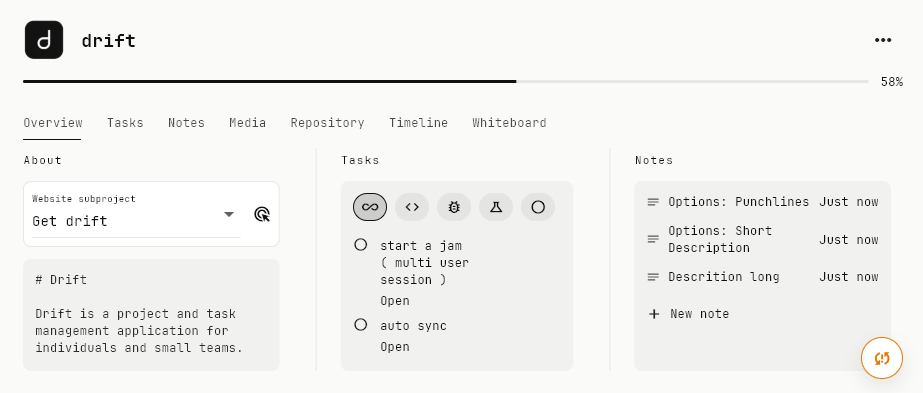
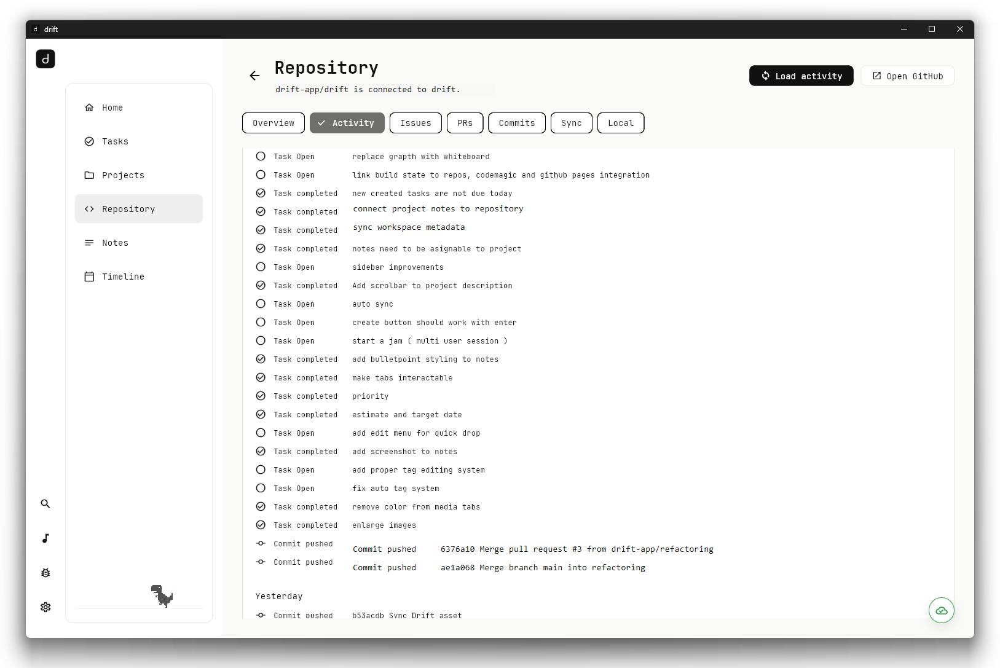
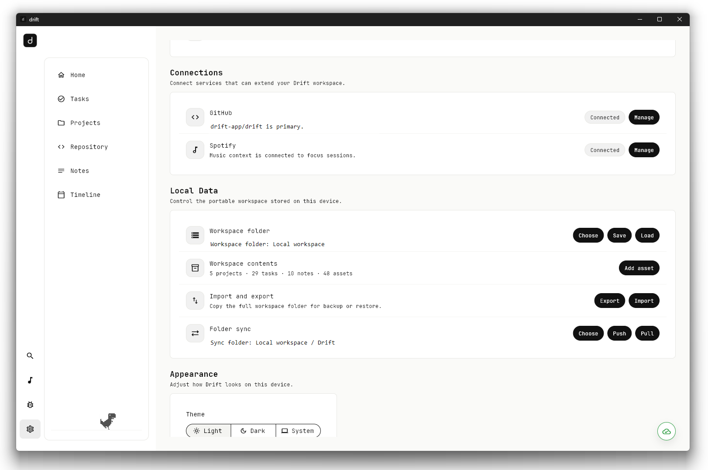

drift
The workspace around your repository.
Manage tasks, notes, timelines, files, and project context directly alongside your code. drift gives every repository a real workspace without forcing your project into another cloud tool.
Local-first. Developer-focused. Built for real projects.

More than source
Software projects create more than code.
Every project accumulates the work around the work: notes, decisions, assets, tasks, timelines, and status.

Repository-centered
Connect your repository.
drift treats the repository as the center of the project. Link a codebase once, then keep every note, task, file, screenshot, and decision attached to it.
- Tasks stay tied to the project they belong to.
- Notes and documentation live beside the code context.
- Repository metadata stays visible when you need it.

Context that persists
Stop rebuilding project context.
Every project has memory: why a decision was made, what needs to be built, how the system works, and where the useful files are. drift keeps that context together instead of making you rediscover it every week.
Your data
Your workspace. Your data.
Work offline, keep ownership, and decide when a project should sync.
Project context stays yours.
Keep working anywhere.
Connect GitHub when needed.

Keep moving
Clone the repository. Continue working.
drift is built for a future where project context travels with the code. Open a repository and instantly recover the tasks, notes, documentation, assets, and decisions that make the project understandable.
- Tasks
- Notes
- Documentation
- Assets
- Decisions
$ git clone github.com/drift-app/driftSoftware projects need more than source code.
drift keeps everything else connected.